「03」面向对象¶
常见七大查找算法¶
简介¶
基本查找
- 二分查找-插值查找-斐波那契查找
前提：数据必须有序
这些是二分的优化，区别是计算mid的方式不一样
- 分块查找-哈希查找
原则1:块内无序，块间有序
原则2:块数量是数字个数开根号
核心算法：先找在哪一块中，然后在块内找
1.定义一个块类（里面放最大值，起始、结束索引
2.这个类数组里面放全部的块
java中的class类就是C++中的结构体
常见排序算法¶
- 冒泡排序、选择排序
- 插入排序
认为前面部分是有序的，后面是无序的，从后面一个一个拿出来比较前面的数字，然后把它插入。
- 快速排序
（含有递归的算法思想）
递归的俩个核心
找出口，找规律
方法内部再次调用方法的时候，参数必须更加靠近出口
*递归算法¶
核心：找出口，找规律
出口：就是一个具体的、到尽头的值
比如斐波那契数列，第1和第2的值是1，这个时候就可以用1和2作为出口
If x==1 ||x==2 return 1;
规律：只要写到一次具体的规则，就会重复调用
比如斐波那契数列,规律：从3个开始，每一次都是前2个数相加。
Return sum(x-1)+sum(x-2);
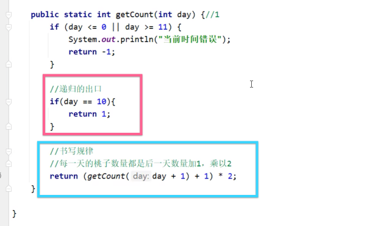
Ayyays数组API¶
搜索、拷贝、填充、排序、打印数组
*特别了解Sort方法¶
Sort是默认基本数据类型升序排序
- 如要按照指定的规则排序或者要引用数据类型进行排序，就要重写排序规则！
Sort底层是 插入排序+二分查找
其中sort中的排序规则，是一个接口实现类，这时候只要用匿名内部类（主要是简化代码
如果实现类对象只要用到一次，就可以用匿名内部类的形式进行书写
- Compare的参数
（插入排序+二分查找）
o1是表示在无序序列中便利得到的每一个元素
o2是表示在有序序列中的元素
返回值：正数（0）表示要插入的元素是大的，放在后面。
负数表示，要插入的元素是小的，要放在前面
- Compare 方法的内部
可以按照自己想定义的规则去任意写。
比如：
按照字符串的长度排序 ——Return o1.length()-o2.length()
按照字符串内容来排序——Return o1.getname().compareTo(o2.getname)
Lambda表达式¶
首先引入
忽略面向对象的复杂语法，强调做什么，而不是谁去做
- Lambda格式
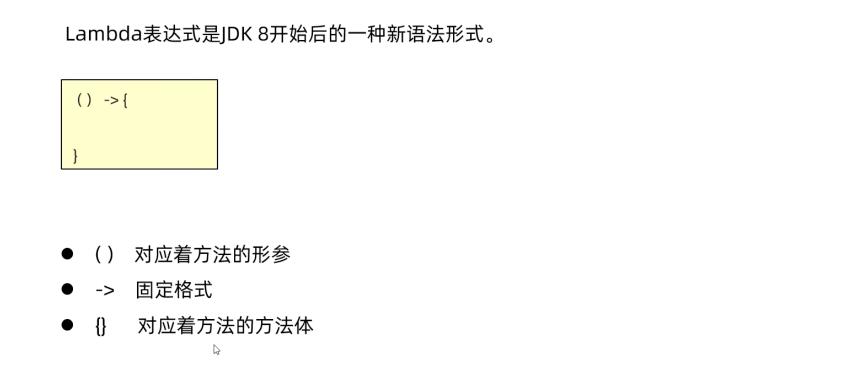
- 作用
1.能且只能简化函数式接口的匿名内部类的书写
2.让代码更加简洁
函数式接口：这个接口有且只有一个抽象方法
@FunctionInterface表示下面的借口是函数式接口
- Lambda省略规则
1.参数类型可以不写
2.如果可以只有一个参数，同时（）也可以省略
3.如果lambda只有一行，大括号，分号，return可以省略不写，需要同时省略。
- 例子用Arrays.sort()，里面参数的匿名内部类试试
单列集合Collection¶
单列集合的顶层接口
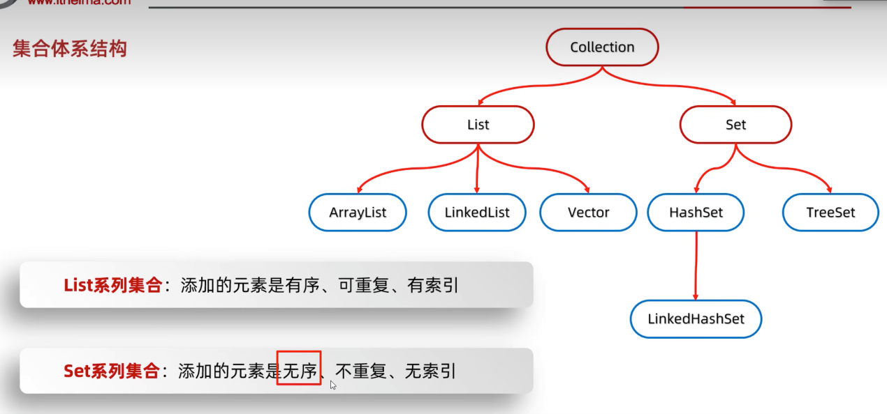
collection的方法¶
简单来说就是增、删、查询（查个数，查具体的元素……
其中contains（）底层是用equals方法来判断的，所以如果集合中存储的是自定义类，就要在类里重写equals方法，否则就是用objects的equals（这个是比较地址值）
1.迭代器遍历¶
Iterator<E>
遍历全部元素
迭代器类似于指针，不依赖索引
注意：
1.迭代器遍历完毕了，指针不复位，要想复位，就要重新创建对象
2.在迭代器遍历的时候，不能用集合的方法进行删除和增加。如果实在要删除可以用迭代器的方法remove来删除
2.增强for遍历¶
- 底层就是迭代器
- 作用：简化代码
- 适用范围：所有单列集合和数组才能用
- 格式
a是第三方变量，依次表示集合中的每一个数据
- 快捷生成方式：
arr.for
3.Lambda遍历¶
- 一个方法
里面抽象类方法
accept(s)参数s一次表示集合中的每一个数据
接着可以用Lambda来简化匿名内部类
List集合接口¶
- 特点：有序、有索引、可重复
- 特有的方法都有参数都是索引
ListIterator列表迭代器的使用方法和普通迭代器一致，
不同的是在于它多了往List中增加元素的功能
- 如果在遍历的过程中要删除或者增加元素，不能用集合中的方法来增或者删，必要要用迭代器中的方法
基本数据结构¶
栈、队列、数组、链表
- 数组VS链表
- 数组：查询快，增删慢
- 链表：查询慢，增删快
ArrayList的底层¶
底层是数组结构的
- 利用空参创建的集合，在底层创建一个默认长度为0的数组
- 添加第一个元素时，底层会创建一个新的长度为10的数组
- 存满时，会创建一个1.5倍的新数组
- 如果一次添加多个元素，1.5倍还放不下，则新创建数组的长度以实际为准
TIPS：扩容的意思不是原数组本身可以增加容量，而是创建一个可以容纳更多元素的新数组
LinkedList的底层¶
底层是双链表
特点：增删快
内部类 Node（说白了就是结构体）
迭代器的底层¶
底层是一个类似于指针的cursor
一个一个指向下一个元素
泛型¶
- 为什么要引入泛型？
没有泛型，集合就可以存储任意的数据类型，只能用object类来接受集合里面的内容，不能调用子类特有的方法，（注意这个时候强转可能会出现异常）
所以推出了泛型
- 格式
<引用数据类型>
注意一定不能写基本数据类型，
因为基本数据类型它没有顶级父类Object类，没办法转成Object类
- 作用：就是为了统一数据类型！
这就是为什么JAVA是强类型的语言
-
泛型的种类
-
带有泛型的类
Public class ArrayList<E>{}
创建该类的时候，E是数据类型
里面的E可以写任意字母T……都可以
有点像C语言中#define datatype int
- 泛型方法
Public<T>void show(T t) -
泛型接口
Public interface List<E>{} -
应用场景
泛型不具备继承性、但是数据具备继承性
一句值得品味的话
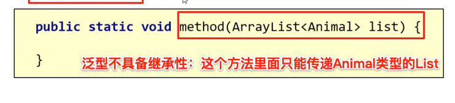
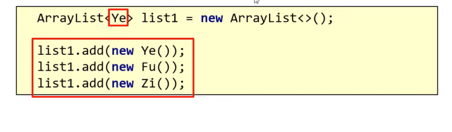
- 在定义类、方法、接口，如果类型不确定，就可以定义泛型类、方法、接口
这个存在弊端，可以接受任意的数据类型，太广了，如果要限定一些类型，这个时候就看·方法2
- 如果类型不确定，但是能知道以后传递的是
某个继承体系中的，就可以用泛型的通配符
- 泛型的通配符
？ Extends E表示可以传递E所有的子类类型？ super E表示可以传递E所有的父类类型
set集合接口¶
基本数据结构¶
二叉树的演变
- 普通二叉树
弊端：数据不规律，不好查找元素，于是有了二叉查找树
- 二叉查找树
规则：任意节点，左子节点比当前节点小，右子节点比当前节点大
弊端：可能会导致左右树高度差过大的情况，于是出现平衡二叉树。
- 平衡二叉树
规则：任意节点左右子树高度差不超过1
引入问题：为什么要旋转？插入新节点，导致树不平衡了，所以就要旋转了
- 平衡二叉树的旋转机制
这里用左旋机制来说明
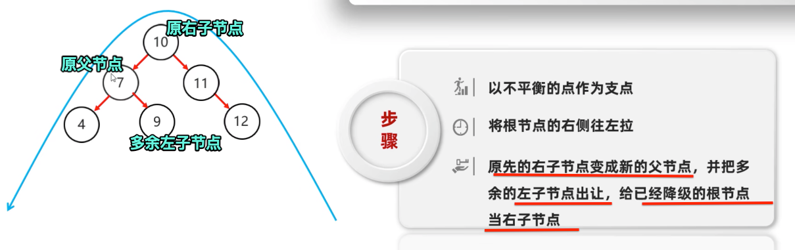
- **四种旋转情况
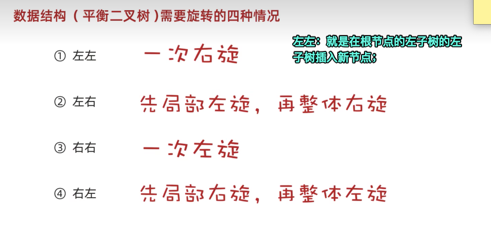
-
红黑树
-
引入：因为平衡二叉树插入节点的时候，左右旋次数太多有时效率不好，所以引入了红黑树
-
原因：大部分情况下只要改变颜色就可以了，旋转的机会比较少
-
特点
-
是特殊的二叉查找树
- 不是高度平衡的
-
特有的红黑规则， 每一个节点是红或者黑
-
5个红黑规则：
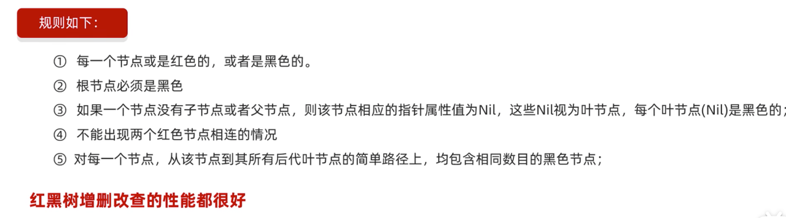
- 默认颜色：默认添加的节点是红色的，效率高
- 添加节点的几种情况以及解决方法
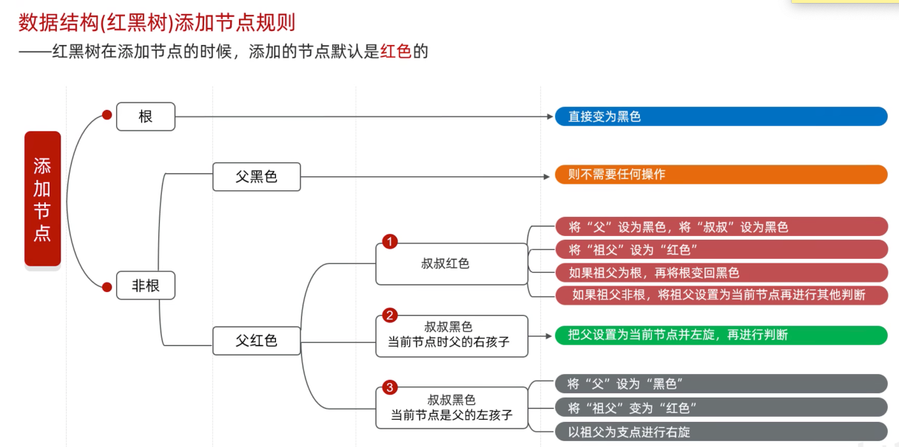
简单认识Set¶
-
特点
-
无序、不重复、无索引
-
方法和collection的API一致
-
遍历方式
迭代器---增强For---lambda表达式
HashSet¶
- 组成：数组+链表+红黑树
JDK8之后的版本是这样的，
JDK8之前是数组+链表
- 哈希值：默认是用地址值取计算出来的
作用：确定元素添加在数组的哪个位置
- hashcode方法
重写这个方法会根据属性值来计算哈希值
- 底层原理
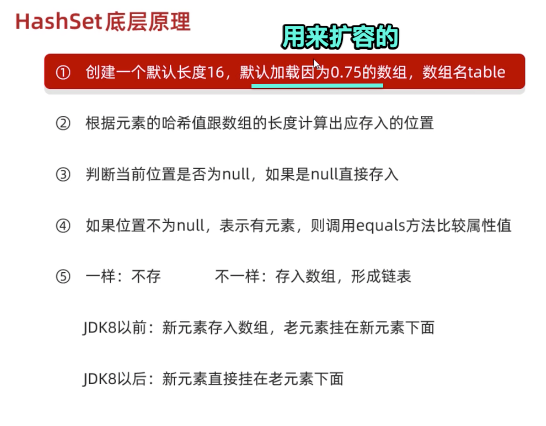
-
当链表长度超过8，而且数组长度大于等于64，自动转换成红黑树
-
如果集合中存储的是自定义对象，就必须要重写hashcode和equal方法。这个是为了去重复
LinkedHashSet¶
- 区别：有序
- 作用:能保证存储和取出的顺序一致
- 原理：多了双链表的机制
TreeSet¶
- 特点：不重复、无索引、可排序
- 底层：红黑树，性能好
- 排序规则：从小到大（默认）如果存的是字符，默认是按照字符在ASCII码表中的数字升序进行排序
那我们想怎么对自定义对象进行排序呢？
- 方法一：
重写抽象方法 compareTo
（this表示当前要添加的元素，o表示已经在红黑树中存在的元素 Return this.getAge()-o.getAge();）
- 方法二：
在新建集合对象的时候，自定义Comparator比较器，指定比较规则
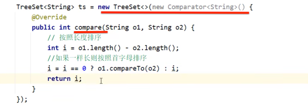
- 什么时候用方法二？
非自定义的类型integer和String，如果要按照自己的想法给排序，比如长度，可以选他。（如上图所示）
因为这个是系统已经封装好，不能去改它的源码
推荐：使用方法一
-
方法返回值的特点：
-
负数：表示当前要添加的元素是小的，存左边
- 正数：表示当前要添加的元素是大的，存右边
- 0表示当前要添加的元素已经存在，舍弃
总结单列集合¶
众多单列集合如何去选择？
Map双列集合¶
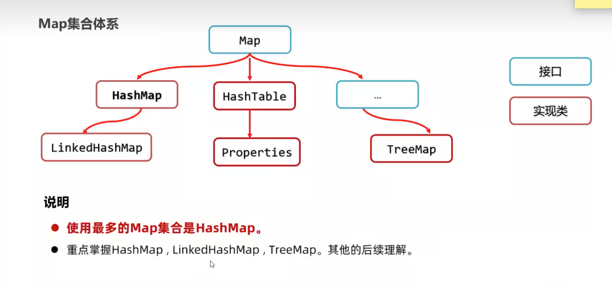
- 特点
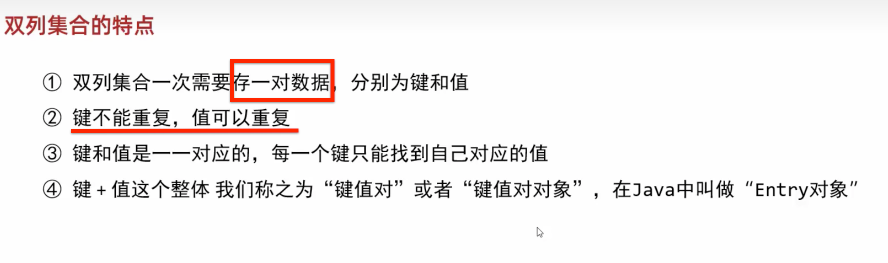
常见的API¶
Map是双列集合的顶层接口
一个概念：键key-值values对
API:增-删-查
- Put方法的细节
Put 添加/覆盖
1.如果添加的时候键不存在，返回的是null
2.在添加的时候如果键已经存在，会把原有的键值对覆盖，返回被覆盖的值
1.键找值遍历¶
- 通过方法
keySet把键放到一个单列集合Set中， - 遍历单列集合Set得到每一个键，然后利用map集合的键获得对应的值
方法get（key）
这个遍历Set里面装的是键
2.键值对遍历¶
- 通过方法
entrySet把所有的键值对 对象放到一个单列集合Set中 - 遍历单列集合Set获得每一个键值对对象，然后调用方法
getKey获得键getValue获得值
这个遍历Set里面装的是键值对对象，
也就是把键值对对象抽象了
3.Lambda遍历¶
forEach依次得到每一个键和值
下面是样例
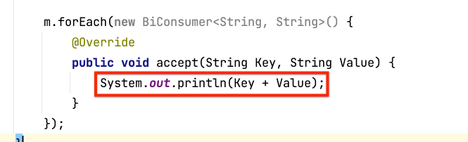
这个方法的源码和第二种遍历方式是一样的
Hashmap¶
特点：
- 方法继承map的
- 键的位置放的是自定义对象，要重写equlas、hashcode方法
- 值的话不用
LinkedHashMap¶
特点：有序、不重复、无索引
底层：多了个双链表
TreeMap¶
- 自带排序的
- 可排序：对键进行排序
- 默认是按照键的从小到大进行排序，也可以自己规定规则
俩种书写规则，具体看TreeSet板块
可变参数¶
- 引入问题
如果形参的个数是未知的？怎么办
就要引入可变参数
底层是数组，是java帮我们创建好的
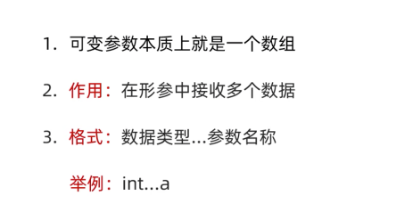
*Collections集合工具类¶
shuffle打乱集合顺序
addAll批量添加
sort方法：排序
集合嵌套¶
在双列集合中，嵌套的是一个单列集合ArrayList
Stream流¶
目的¶
结合了Lambada 表达式，用于简化集合和数组操作的API
思想¶
通过stream()把元素一个一个放在传送带上，一遍一遍通过stream流API简化并过滤掉自己不要的。
获得Stream流¶
- 单列集合Collection获取流
- 双列map获取流
- 数组获取流
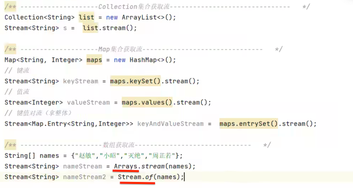
中间方法API¶
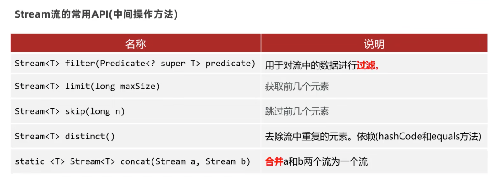
终结方法API¶
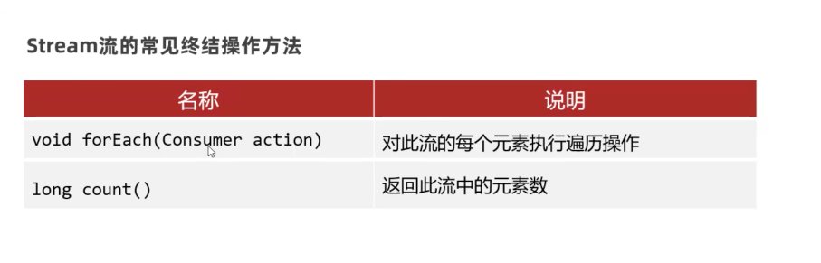
收集Stream流¶
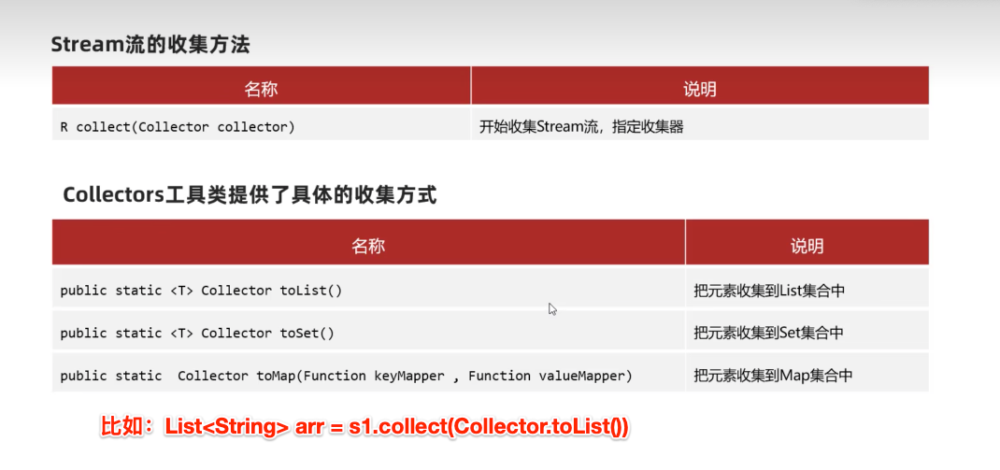
异常¶
概述¶
- 为什么要用异常
1.如果出现异常，不提前去处理，JVM虚拟机会终止
2.提前处理异常，是让程序更加稳健
-
异常体系
-
运行时异常：运行时候出现的异常
- 编译时异常：编译的时候就报错
运行时异常¶
RuntimeException
编译时异常¶
- 作用：
1.是担心程序员技术不行，比如一些很比较复杂的方法内写错，在编译阶段时就爆出一个错误，目的在于提醒不要出错。
- 继承：不是runtimeException，是继承Exception
默认异常处理机制¶
并不好，一旦出现真的异常，程序立即死亡！
1.处理方法throws¶
- 流程：方法内报错->抛给调用者->调用者抛给主函数main->main抛给JVM虚拟机->JVM直接杀死程序
就是一个没有人管这个异常，都在推卸异常
2.try catch¶
选中一块代码，快捷键cmd+opt+t可以快速添加try/catch
3.前两者结合¶
方法体用throw抛给调用者，
调用者用try自己处理异常
规范上是最好的方法
自定义异常¶
Throw：写在函数内的
Throws：写在函数声明的地方
日志¶
日志规范¶
一些接口
- commons logging
- Simple Logging Facade for java（简称slf4j-api
日志实现框架¶
- 含义：是别人已经实现了日志规范接口的东西
- 作用：可以把日志信息写到文件或者数据库中，性能较好
- 比如：Logback
Logback¶
- 主要分为三个技术模块
core-classic-access 基础模块-log4j的改良模块-有关HTTP的模块
- 快速入门
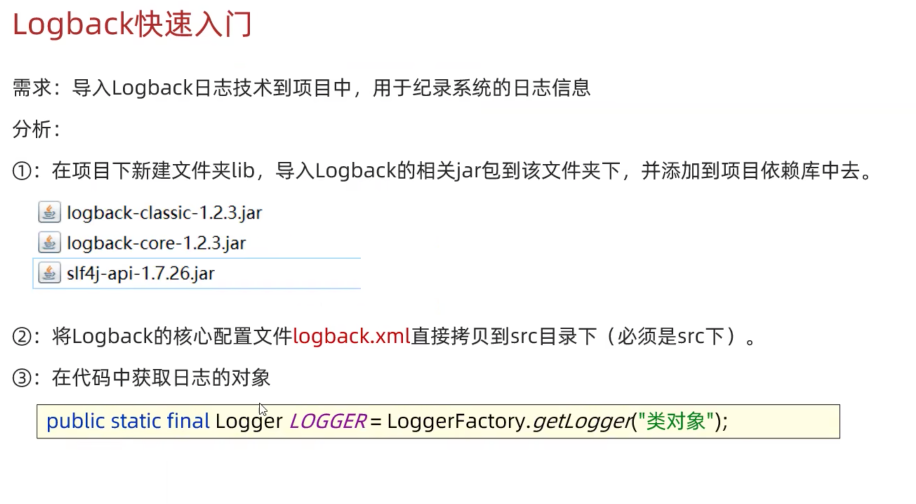
- 配置文件xml
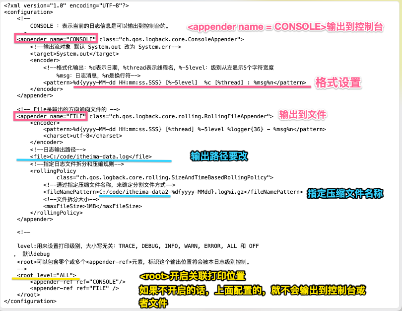
日志级别设置¶
作用：来控制哪些日志不用输出
- TRACE<DEBUG<INFO<WARN<ERROR
- 路径跟踪<调试<关键信息<警告<错误
ALL/OFF：打开全部日志/关闭全部日志
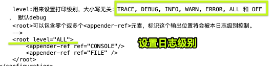
默认级别是debug，只输出不低于当前级别的日志
比如就只写
File类-IO¶
File类¶
File类可以定位文件：进行删除、获取文本本身信息
但是不能读写文件内容
- File类创建对象
支持相对路径，默认从当前工程下的目录寻找文件
文件夹路径的/可能要用转义字符
字符集¶
- GBK中国标码
一个中文以两个字节的形式存储
- Unicode
万国码 兼容ASCII编码表
- UTF-8字符集
中文以3字节形式存储，英文和数字占1个字节
IO字节输出流¶
含义：用来读写数据。
字节流、字符流
API：释放资源close、read
-
举一个例子：
-
定义一个FileInputStream 对象：is
-
定一个桶对象放读进来的东西，byte[] buffer = new byte[3]
-
is.read(buffer)读3个字节的内容放到桶中（3个英文字母 or 1个中文汉字）
综上效率过低：我们要的是使用输入流一次性读完文件的全部字节，解决乱码问题
官方API：readAllBytes()
读完之后，读到的内容都是字节，想要变成想要的字符，需要用new String（Byte [] a）一下
本质是char的字符类型的转换 （char）byte
以默认的方式utf-8进行解码
字节<—>字符¶
输出的、输入的都是字节
字节是人看不懂的，要通过字符集UTF-8来转成字符
字节->字符 new String（Byte [] buffer）
字符->字节 .getBytes()byte[] buffer2 = “你好”.getBytes()
IO字节输入流¶
outputstream
实现类Fileoutputstream
-
API：
-
写
write - 刷新(让写出去的数据生效）
flush -
释放资源（一定要做，会占内存）
close -
实现数据追加
优雅的资源释放方式¶
经典做法：try-catch-finally
字符输出/输入流¶
- 输出流
针对字节流读取中文输出，会出现乱码
FileReader
API：read
读取一个字符返回，没有可读的字符就返回-1
如果参数是字符数组char[]，最后要输出成字符串中文，还是和字节流一样，new String （char[] buffer）=这个代码的意思是字符->字符串
- 输入流
FileWriter
API：Write
换行：/r/n
缓冲流¶
基本内容¶
- 原理：在内存中多了个缓冲池（8Kb），提高原始流读写数据的性能
- 如何构造缓冲流对象
构造参数放原始流：Bufferinputstream(inputstream xx)
- 继承的是
FileoutinputFilereader - 种类：字节缓冲输入流、字符缓冲输入流
- 使用方式和父类是一样的
分类¶
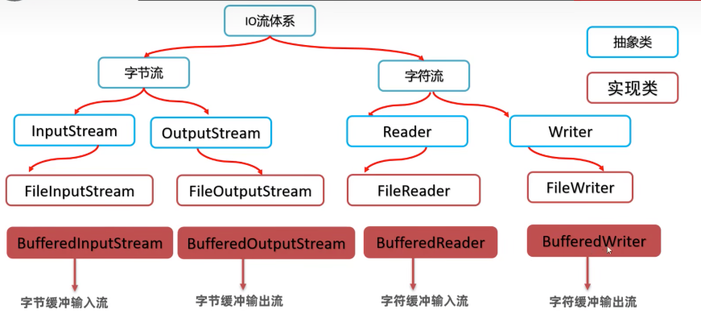
新增API¶
- BufferedReader
readLine读一行代码
- BufferedWrite
newLine换行
这样就不用自己写\r\n来换行了
转换流¶
只有字符，没有字节的！！
基本内容¶
问题 ：当文件和代码编码不一致的时候，会出现乱码
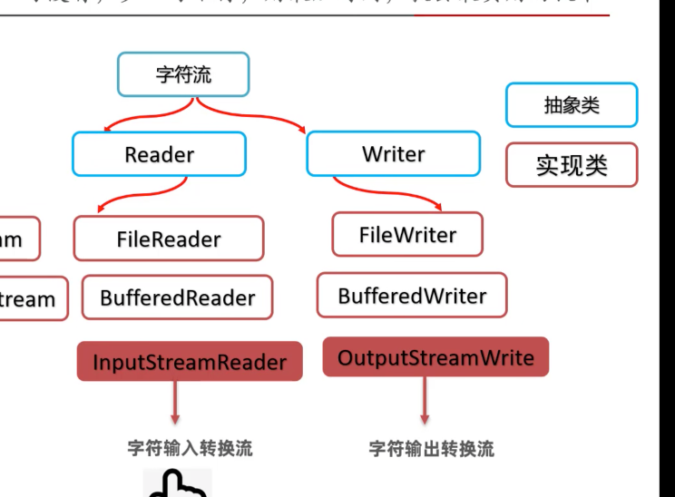
使用方式¶
public InputStreamReader(InputStream is,String charset)
可以指定编码把原始字节流转换成字符流，如此字符流中的字符不乱码
原始字节流-->转换字符流-->缓冲流
inputstream inputstreamReader bufferReader
同理outputstreamReader
对象（反）序列化¶
序列化¶
- 含义：将对象存到磁盘文件中
-
实现的流：
ObjectOutputStream -
必要的条件：该对象必须要实现序列化接口
Serializable - 构造对象输出流：
ObjectOutputStream(new OutputStream()) - API：
writeObject（Object o）
反序列化¶
- 含义：将对象从磁盘读到内存中
- 构造对象输出流：
ObjectInputStream(new InputStream()) - API:
ReadObject（） - 版本号（了解）：
打印流¶
PrintStream
PrintWriter
Properties¶
作用
- 可以存储Properties的属性集的键值对数据到属性文件中去
store
- 可以加载属性文件中的数据到Properties对象中来
load
多线程¶
创建方式123¶
- 方法一：继承Thread类
1.定义一个线程类，继承Thread类，重写run方法
2.在main中创建对象，用start（）方法来启动线程
缺点：不能继承其他类，不利于扩展
- 方法二：实现
MyRunnable接口
1.实现接口，重写run方法
2.创建对象
3.把对象交给Thread线程对象
4.调用start（）方法
优点：可以继承别的类，实现多个借口
缺点：不能返回结果
- 方法三：实现
callable接口
1.实现callable接口，重写call方法
2.创建对象，把Callable对象交给FutureTask对象（是Runnable对象，可以交给Thread）
3.再把FutureTask对象给Thread
4.最后Thread对象就可以Start()开启线程,FutureTask可以用get方法获得call方法的结果返回值
优点：有返回值
Thread常用方法¶
设置线程名字--获得名字--获得当前线程--休眠方法
start启动线程
线程同步¶
概念¶
- 问题：解决线程安全问题
- 核心：加锁，让多个线程依次访问共享资源。
方法实现123¶
-
方法一、同步代码块
Synchronized来封装主要代码 -
同步锁对象
实例方法建议用this作为锁对象
静态方法建议用字节码类名.class 作为锁对象
-
方法二、同步方法
-
格式
Synchronized写在返回值类型的前面
-
原理：每次只能一个线程进入，执行完毕后自动解锁，其他线程才能进来执行
-
实例方法默认是this
静态方法默认是xx.class
- 方法三、Lock锁
ReetrantLock
线程池¶
基本操作¶
- 问题：创建新线程开销太大了，影响系统性能
- 解决：
ExecutorService接口，实现类ThreadPoolExecutor
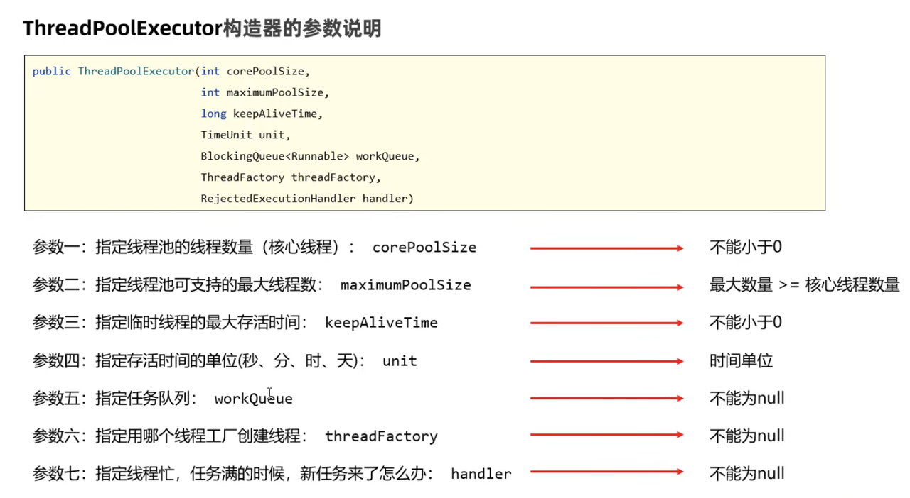
- 如何得到线程池对象
ThreadPoolExecutor 来创建一个线程池对象
- 线程池启动的API
Executors工具类¶
通过工具类来创建线程池
存在风险。没有限制任务数量，会导致资源耗尽。不建议使用
定时器¶
- 定时器（其实是一个线程池）
- API :
scheduleAtFixedRate
并发和并行¶
参考好文 并发和并行的区别
-
并发
-
在操作系统中，是指一个时间段中有几个程序都处于已启动运行到运行完毕之间
-
由于CPU切换的速度很快，给我们的感觉是这些线程在同时执行。这就是并发
-
并行
-
并行（Parallel），当系统有一个以上CPU时，当一个CPU执行一个进程时，另一个CPU可以执行另一个进程，两个进程互不抢占CPU资源，可以同时进行，这种方式我们称之为并行(Parallel)。
-
区别：
-
并发是指在一段时间内宏观上多个程序同时运行。并行指的是同一个时刻，多个任务确实真的在同时运行。
- 并发的多个任务之间是互相抢占资源的。 并行的多个任务之间是不互相抢占资源的。
- 只有在多CPU的情况中，才会发生并行。否则，看似同时发生的事情，其实都是并发执行的。
网络通信三要素¶
IP地址¶
- 含义：
定位上网设备的唯一标志。
常见的有IPv4 IPv6
- 域名：例如www.baidu.com
- dns服务器:（解析域名->IP地址）
- IP地址形式：公网地址、私有地址（局域网使用）
- IP常用命令
ipconfig查看本机IP地址
Ping ip地址：检查网络是否连通
- 特殊IP
IP地址类¶
- 获取对象：静态方法
getxxxx
比如：获取本机IP getLocalHost
- API：获取主机名字、获得IP地址
端口号¶
- 含义：程序在计算机上的标识
协议¶
- 含义：连接和通信数据的规则
- 传输层常见的协议：TCP 、UDP
-
TCP是可靠的协议，但通信效率低
-
UDP是面向无连接，不可靠传输的通讯协议
UDP¶
- 特点：无连接、不可靠传输
- 过程：注册端口—创建数据包对象接受数据Packer ——端口对象调用接收方法（参数是Packer）
- UDP的接受端可以接受很多发送端的消息，因为只负责接受数据包，无所谓是哪个发送端的数据包
TCP¶
- 含义：是一种面向连接、安全、可靠的协议
- TCP模型：客户端==Socker===服务端 通过IO流来输入输出数据
- 客户端基本操作
Socker管道对象（用来请求与服务端连接）
调用它的getoutStream方法得到字节输出流，字节输出流->高级打印流
- 服务端基本操作
ServerSocket类-服务端端口
调用它的accept方法来建立管道Socker，返回的是Socket对象
用socket调用方法得到字节输入流 ->转换流->缓冲字符输入流
- 让服务端可以处理多个客户端的通信需求
利用多线程
每收到一个管道，交给一个独立的子线程负责读取消息
- 利用多线程来优化上面的代码
Junite单元测试¶
针对JAVA方法的测试，进而检查方法的正确性。
问题：main不能得到测试的结果报告，不能自动化测试
引入：Junit单元测试
- 作用：可以生成全部方法的测试报告
如果某个方法测试失败了，不会影响其他方法的测试
-
快速入门
-
编写测试方法：公共的无参数无返回值的非静态方法
- @Test注解：标注该方法是一个测试方法
- 有返回值的方法，要写Assert断言，调用类的静态方法（失败消息，期待值，实际值）
Junit框架jar包 是IDE自带的
反射¶
基本操作¶
得到编译后class文件的对象
- 反射第一步：获得Class对象
方法：
1.静态方法forName
2.类名.class
3.对象.class
- 第二步获得构造器对象or变量对象or方法对象
2.1获得构造器对象
getDeclaredConstructors（）拿到所有构造器
2.2利用构造器对象，创建对象
私有构造器、方法、变量，要打开权限，setAccessible（true）
- 获得成员变量对象
getDeclareedFields()
3.1利用成员变量赋值
3.2利用对象取值get
- 得到成员方法对象
getDeclaredMethods()
4.1触发方法
反射的作用¶
1.绕过编译阶段为集合添加数据
2.做通用框架的底层原理
注解¶
作用：对类、方法、变量做标记，然后进行特殊处理
动态代理¶
Proxy
学不懂。。
作用：提高代码复用性
XML¶
- 定义：可扩展标记语言，用于自定义数据格式
- 使用场景：存储和传输数据、作为软件的配置文件
- 第一行：必须是文档规则
- XML标签规则：
这里面写你要的内容
-
扩展
-
注释：<!- - xxxxxxxxx - ->
- 特殊字符：
- CDATA区：里面就不会出现冲突～～
XML解析技术¶
Dom4j
是用树的方法来解析的
XML检索技术¶
XPath
绝对路径、相对路径、全文查找、属性查找
下面是绝对👇路径的一些使用
SAXReader解析器-》Document-〉调用方法（）-》得到元素element-〉调用元素的各种方法得到自己想要的东西
设计模式¶
- 工厂设计模式
就是一种代码的设计模式
和现实吻合
- 装饰设计模式
在不改变原类的基础上，动态地扩展新的功能